Prefab 是 Unity 的一種物件型態，使用 Prefab 能夠將資源進行封裝來達到泛用物件的效果。
但一直以來，卻存在著一個令人詬病的問題，「無法巢狀編輯 Prefab」。
若 Prefab Parent 內含有其他 Prefab，A、B 及 C，一旦修改了 A、B、C 的內容並更新 Prefab Parent，則會遺失 Prefab 之間的關聯性，需要手動更新其餘與 A、B、C 相關的物件。
在 Unity 2018.3b 推出的新 Prefab 系統，包含 Nested Prefab 和不少新功能。
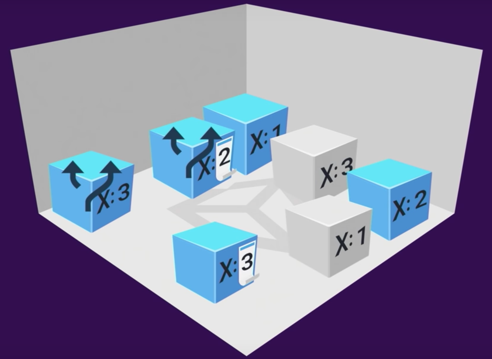
主要功能包含
1. Prefab Mode
2. Nested Prefab
3. Prefab Variant
4. Prefab Override
Prefab Mode
過往的開發流程中，開發者在編輯 Prefab 時，其編輯模式會與一般物件共用。
Prefab Mode 則是新版 Prefab 系統中一個獨立的編輯視窗。
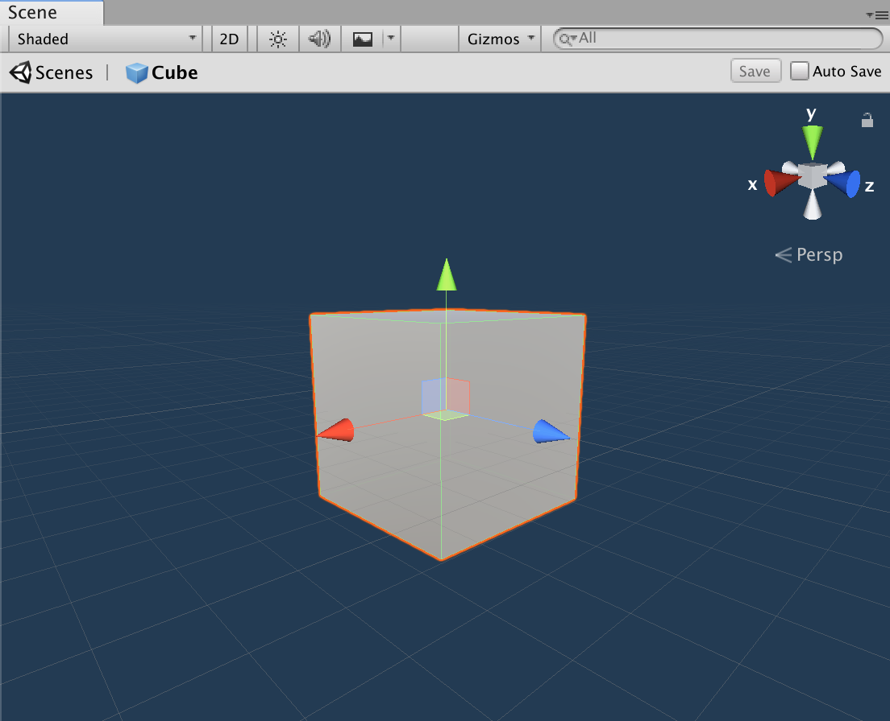
包含了三種開啟方式
1. 在 Project 視窗中雙擊 Prefab
2. 在 Project 視窗選擇 Prefab 後，點擊 Inspector 視窗中的 Open Prefab 按鈕
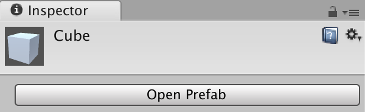
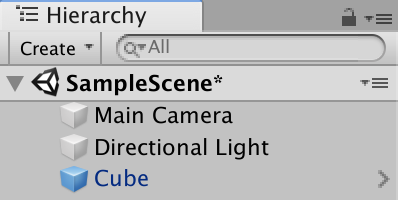
Nested Prefab
如同上面所述，這次的更新解決了一直以來令開發者詬病的問題，「巢狀編輯」，開發者再也不用煩惱遺失 Prefab 參考的問題。
透過 Prefab Mode 的幫助，可以清楚的遍歷在 Prefab 內的關聯物件，同時也支援巢狀 Prefab 的編輯，能夠在編輯視窗內導引到不同的 Prefab 中。
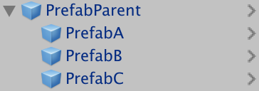
Prefab Variant
Prefab Variant 是一種包裝的概念，不同的 Variant 共用同一個基底資料，而每個 Variant 則有各自的客製化修改，使其產生不同的配置內容。
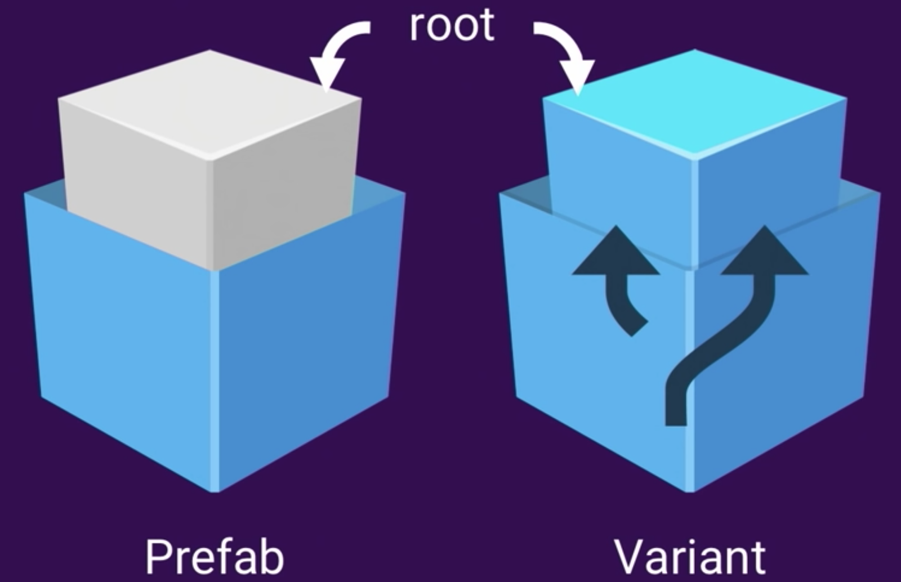
建立 Prefab 時，若專案內以包含相同 Prefab，則會顯示提示視窗詢問開發者要以 Prefab Variant 或 Original Prefab 形式建立。
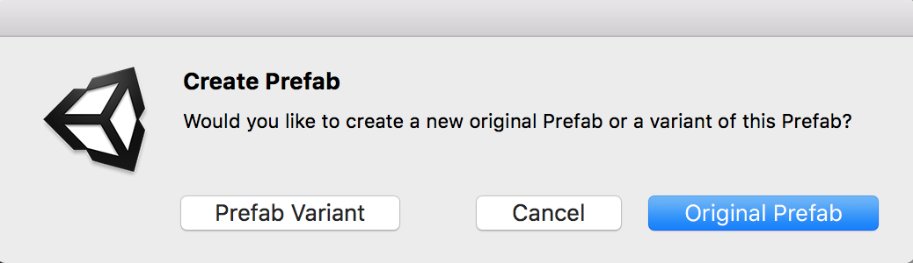
Prefab Override
能夠將 Override 系統理解為簡易版本控制系統，透過 Override 能夠相當容易對 Prefab 的修改內容進行取捨，在 Inspector 視窗中點選 Override 即可開啟。
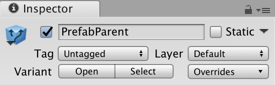
Revert All：復原所有修改
Apply All：應用所有修改
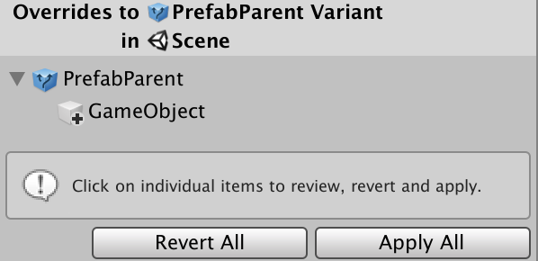
此外，也可以單獨點選修改內容，並針對該修改內容進行處理
Revert：復原此修改
Apply as Override in Prefab ‘XXXXX’：將修改內容應用至 XXXXX Prefab 中（在 Prefab 是 Variant 形式時出現，能夠選擇 Apply 的目標物件）
Apply to Prefab ‘XXXXX’：將修改內容應用至 XXXXX Prefab 中
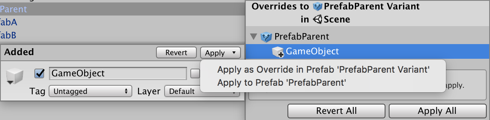
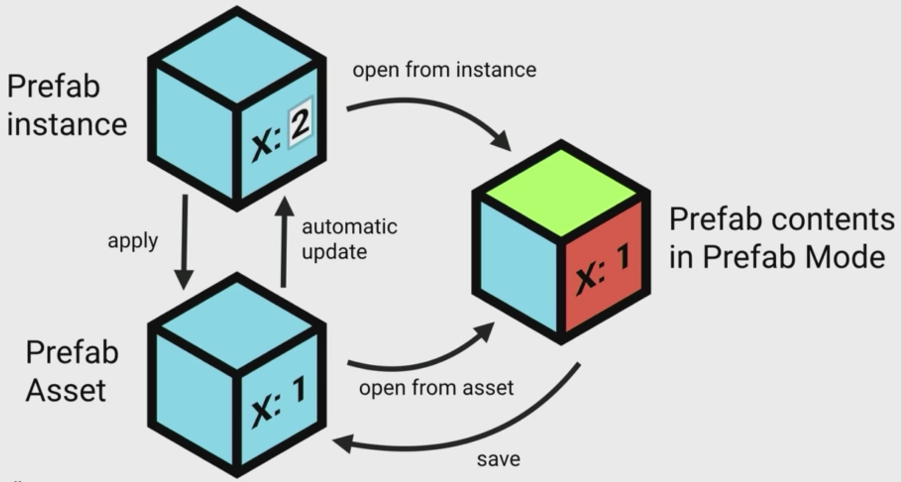
擁有巢狀編輯功能優點的同時，操作流程也稍微複雜化了一些，但開發者可以透過 Hierarchy 視窗上的圖標來快速辨別物件狀態。
：一般物件，無任何 Prefab 關聯性，修改不會影響其他物件。
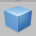
：Prefab 物件，修改物件會影響任何與該 Prefab 關聯的物件。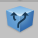
：Prefab Variant 物件，修改物件會影響與該 Prefab Variant 關聯的物件。